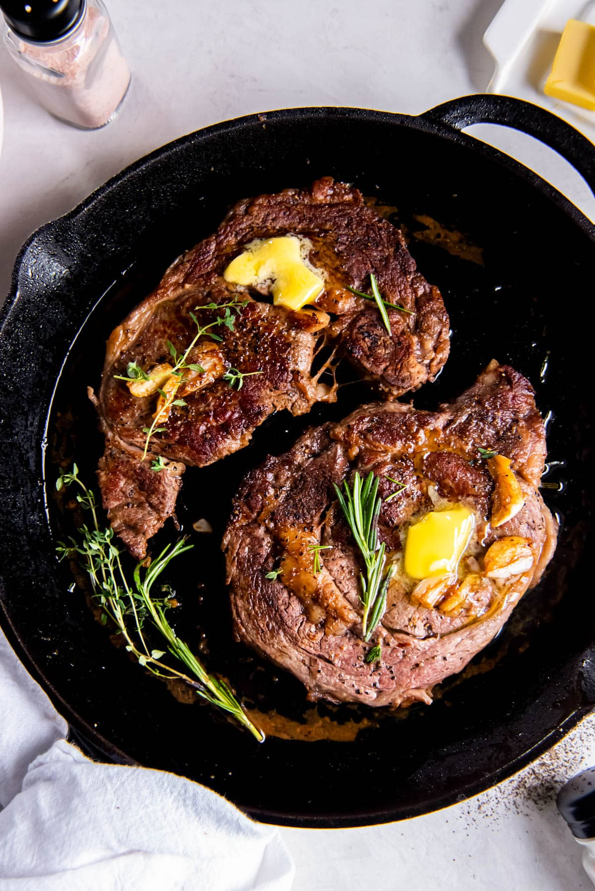

The Perfect Pan Seared Ribeye!

This is my favorite way to prepare a Ribeye. Nothing brings out the juicy flavors of a ribeye like a nice sear in a cast iron.
Ingredients (For Two)
- 2 boneless ribeye steaks, 1-inch thick (about 10-16 ounces each)
- Kosher salt, to taste
- Black pepper, to taste
- 2 teaspoons extra virgin olive oil
- 1 tablespoon unsalted butter
- 2 cloves garlic, peeled and crushed
- 2 sprigs fresh rosemary , and/or thyme
Cooking Instructions
- Remove steaks from the refrigerator 60 minutes prior to cooking.
- Heat a large cast iron pan over medium-high heat until hot. Meanwhile, pat the steaks dry with paper towels and season with salt and pepper.
- Add the olive oil to the pan and swirl to coat. Once the oil is very hot, add the steaks to the skillet and sear them on each side for 3 to 4 minutes, until browned.
- Reduce the heat to medium and add the butter, garlic and herbs to the pan. Carefully spoon the butter sauce over the steak and continue cooking for 1 to 2 minutes, or until the steak is 140 to 150 degres F for medium doneness (or 5-10 degrees from your desired doneness.)
- Transfer the steaks to a cutting board, cover them loosely with foil and allow them to rest for 10 minutes before serving.